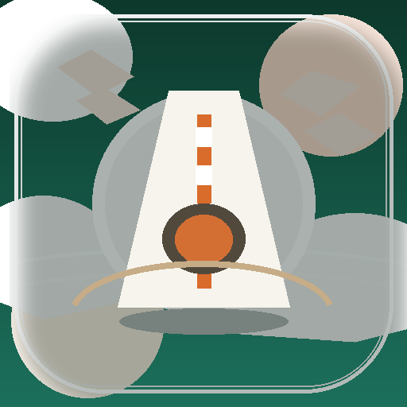
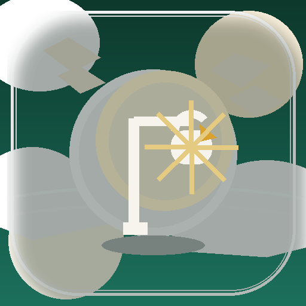
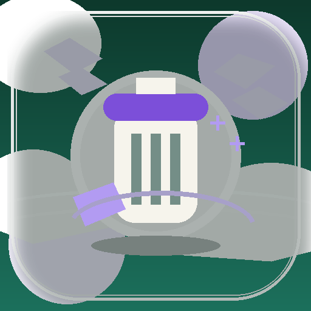
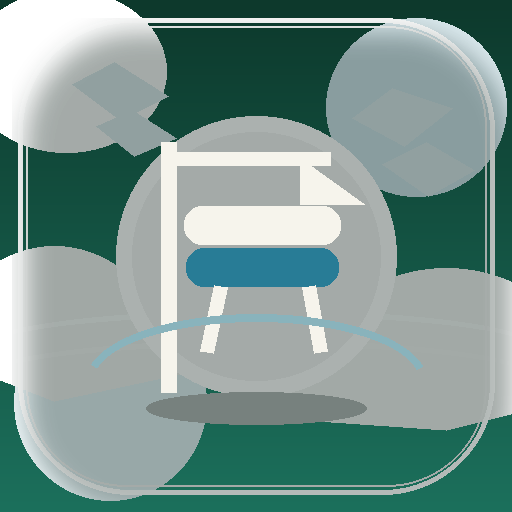
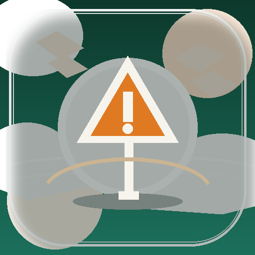

Voirie & Chaussée
Chaussées lateritiques, nids-de-poule, accotements dégradés et affaissements sur les axes du quotidien.
Cette collection remplace les anciens emojis par une famille cohérente de repères visuels pensée pour le terrain communal: voirie lateritique, éclairage tropical, végétation dense, réseaux d’eau, signalisation et équipements publics.

Chaussées lateritiques, nids-de-poule, accotements dégradés et affaissements sur les axes du quotidien.

Lampadaires, lignes, armoires et points lumineux pour sécuriser les abords en soirée.
Débroussaillage, végétation dense, branches menaçantes et entretien des abords communaux.

Poubelles débordantes, dépôts sauvages, encombrants et hygiène du domaine public.

Bancs, abribus, barrières, assises et équipements visibles du quotidien communal.
Caniveaux, grilles, ruissellement, stagnations d’eau et dysfonctionnements hydrauliques.

Panneaux, marquages, alertes de circulation et sécurité des déplacements.
Mairie, écoles, équipements publics et sites communaux nécessitant une intervention.
{kind=link}